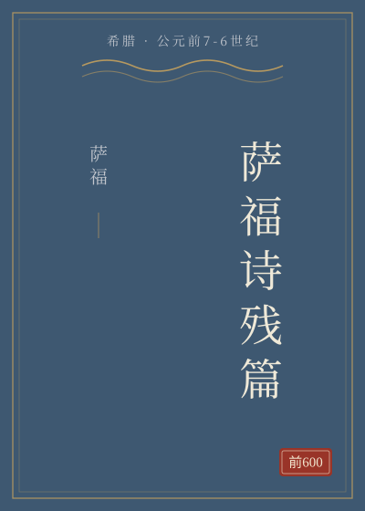
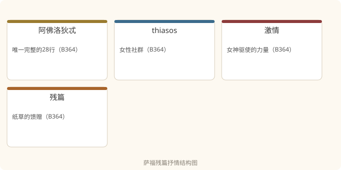

萨福诗残篇
一、基本信息
| 作者 | 萨福 |
|---|---|
| 成书/出版 | 约公元前600年（Britannica B364：约前610-约前570——亚历山大里亚九卷本编订后世散佚） Sappho — Encyclopaedia Britannica（百科全书） |
| 国别/地区 | 希腊 |
| 时代 | 古代 · 公元前7-6世纪 |
| 体裁 | 抒情诗（残篇） |
| 语言 | 希腊语（爱奥利亚方言） |

萨福残篇抒情结构图（主题·结构图）
二、创作背景
Britannica（B364）：'greatly admired in all ages for the beauty of her writing style'——措辞'concise, direct, and picturesque'。
Britannica（B364）：主题围绕其女性社群 thiasos——阿佛洛狄忒为守护神；'Only the ode to Aphrodite, 28 lines long, is complete'——次长残篇16行。
Britannica（B364）：婚礼歌（epithalamia）占 oeuvre 的重要部分；1898年起纸草发现使残篇大增。
三、内容脉络
《阿佛洛狄忒颂》（唯一完整，28行）：向女神求援以说服所爱（B364）。
残篇中的婚礼歌与花环、香膏等阿佛洛狄忒仪式意象（B364：flowers, bright garlands...altars smoking with incense）。
四、主要人物表
| 人物 | 身份 | 说明 |
|---|---|---|
| 抒情'我' | 社群的引领者 | （B364：thiasos 语境） |
| 阿佛洛狄忒 | 守护神 | （B364：tutelary divinity） |
五、主题与艺术特点
- 激情作为'女神所驱使的不可逃避之力'（B364：love is passion, an inescapable power）。
- 女性社群与教育（B364：thiasos——education of young women）。
- 回忆与乡愁（B364：nostalgia and memory）。
六、影响与评论
- Britannica：'the beauty of her writing style'（B364）。
Sappho — Encyclopaedia Britannica（百科全书） - Britannica：与阿尔基洛科斯、阿尔凯奥斯并列（B364）。
Sappho — Encyclopaedia Britannica（百科全书）
七、阅读建议
难点
- 残篇的断裂性。
- 爱奥利亚方言（读译本）。
- 《萨福诗残篇》中译本（人民文学/上海三联等——通说待核）。
- 希腊语原版（公有领域）。
希腊抒情诗首选；与《神谱》等对读。
八、待核实
- '萨福体'诗节术语待核（B364未载）。
- 残篇编号体系（Lobel-Page等）待核。
- '九卷'编订细节待核（B364口径）。
本页主要来源
萨福的其他收录作品：萨福诗残篇